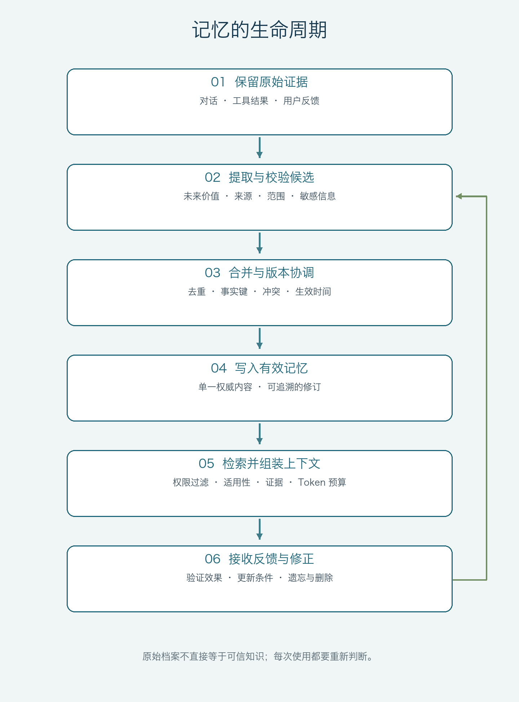

第一章 从聊天记录到可用知识
阅读日期：2026-10-19。本文综合五份主要资料：AWS AgentCore、LangChain、Mem0、MachineLearningMastery 与阿里云 AI Agent Handbook，并补读 LangChain 的记忆概念指南。文末给出来源，具体实现建议属于本文的工程判断。
设想一个编程 Agent 上周帮你调查过流式响应断开。今天遇到类似报错，它如果只说“上次是代理节点的问题”，可能比完全不记得更危险：上次的判断也许只是待验证假设，部署版本和网络路径也可能已经改变。
真正有用的记忆应当能回答：当时观察到了什么，结论经过什么验证，适用于哪些条件，现在是否仍然成立。
因此，Agent 长期记忆的核心问题并不是能保存多少聊天记录，而是：哪些信息值得跨任务保留，凭什么相信它，什么时候取出，以及何时应当修正或忘记。
一、先分清上下文、状态、档案和记忆
这些对象可以共用一套数据库，却不应共用一套语义。
| 对象 | 主要回答 | 例子 |
|---|---|---|
| 模型上下文 | 这一次推理能看到什么？ | 当前消息、工具结果、检索出的记忆 |
| 任务状态与检查点 | 当前执行到哪一步，如何恢复？ | 已完成的步骤、待处理工具调用、任务游标 |
| 原始档案 | 当时到底发生了什么？ | 对话、请求事件、用户反馈、验证产物 |
| 长期记忆 | 哪些历史信息值得影响以后的任务？ | 用户偏好、项目事实、已验证经验 |
| 知识与能力资产 | 哪些内容经过维护，能够稳定复用？ | 项目规范、操作手册、Skill、工作流 |
模型上下文是一次推理的输入集合。应用可以把历史重新装入上下文，但扩大窗口本身不会替应用实现跨会话持久化、冲突处理和删除。
短期记忆也不等于“只存在内存里”。LangChain 的概念文档把它定义为线程范围的状态，并说明可以通过 checkpointer 持久化；长期记忆则通过 Store 在不同线程间共享。[3][6] 两者的区别首先是作用域和用途，而非是否落盘。
同样，保存全部聊天记录解决的是可追溯性。要把聊天用于未来决策，还需要筛选和解释。用户说“今天先用 SQLite”，不应被提炼成“这个用户永远偏好 SQLite”。
二、三种长期记忆，分别服务三类决策
MachineLearningMastery、LangChain 概念文档和 Mem0 的文章都采用语义、情景、程序性记忆这一认知类比。[2][4][6] 它适合帮助设计，不是必须遵守的数据库分类标准。
语义记忆：哪些事实和偏好目前成立
例如“这个项目使用 Go”“用户希望默认使用中文”“这个组织的发布需要审批”。
语义记忆需要有范围。个人偏好、项目约束和组织政策不能混在一个全局用户画像里。它还需要时间：某个项目以前使用 MySQL，后来迁移到 PostgreSQL，两条信息可以都是真的，但适用时期不同。
这里的“语义”指事实和知识的类型，与“语义搜索”不是一回事。前者可以存成关系表或 Markdown，后者只是检索方法。[6]
情景记忆：过去在什么条件下做过什么
例如一次排障的环境、现象、采取的操作、结果和证据。
以一个假设的排障案例为例，情景记忆可以写成：
某版本服务在流式握手后提前结束；日志显示缺少完成事件。更换网络路径后仍有失败，因此尚不能确认代理节点是根因。后续应分别验证账号并发、上游状态和重试分类。
它保留成功经验，也保留失败尝试和未决问题。这样下一次检索到它，Agent 得到的是可复用的线索，而不是被包装成定论的旧猜测。
程序性记忆：遇到这类问题应该怎样做
例如“先确认实际部署，再查对应请求事件，最后验证修复”“提交前运行指定测试”“生成报告时附上来源”。
LangChain 对程序性记忆的讨论包含模型权重、代码和提示词；工程上不必因此让 Agent 自动修改自己的全局行为。[6] 对个人与软件工程知识，更稳妥的做法是把候选经验经过评审和测试，提升为 Git 中可版本化的规则、Skill 或工作流。
这三类记忆可以互相转化：一次成功经历先成为情景记忆，多次得到验证后形成语义知识，再被固化为操作流程。每次提升都应增加证据要求，不能只因为被模型多次重复就升级为规则。[5]
三、AWS 的三种策略，为什么不是上面的三种类型
AWS 这篇文章介绍的内置策略是 Semantic、User preferences、Summary。[1]
其中，事实提取和偏好提取回答“保存什么”，摘要策略则把会话整理成主题叙事，涉及“怎样压缩和组织”。摘要可能包含事实、经历和操作步骤，它不自动等于情景记忆，更不等于完整的程序性记忆。
因此设计系统时，最好分别记录两个维度：
- 用途：事实、经历、方法。
- 表示与处理方式：原始事件、结构化记录、摘要、向量索引、图关系。
同一条经历可以有摘要，也可以有向量；同一条事实可以同时进入关键词索引和结构化查询。不要为了对齐厂商名词，丢掉真正需要维护的语义。
四、记忆系统真正的工作，发生在保存前后
AWS 展示了从事件异步提取、检索相近记忆、合并，再更新存储的流程。其合并动作包括 ADD、UPDATE 和 NO-OP，旧记录通过失效标记保留修订轨迹。[1] LangChain 进一步区分在线写入和后台写入的取舍。[6]
把这些思想落到工程中，可以形成以下生命周期：

图示要点：原始证据与有效记忆分开；每次使用都要重新判断适用性，并保留修正和遗忘入口。
先判断值得记，再判断怎样记
适合进入长期记忆的，通常是稳定偏好、反复使用的事实，以及有证据支持的经验。临时任务参数、模型猜测、一次工具报错、未获授权的敏感信息，都不应因为“有信息量”就长期保存。
每条记忆至少需要回答：来源是什么，适用于谁和哪个项目，何时生效，怎样失效，以及谁能修正。置信度可以辅助排序，但模型给自己打出的 0.95 不能替代证据。
更新不能简化成“最后写入的赢”
“用户喜欢简短回答”和“这份设计文档请详细展开”不一定冲突：前者是默认偏好，后者是本次任务要求。
“之前预算 50 万，现在提高到 75 万”才可能是同一事实的时间更新。即便如此，也应比较声明发生的时间和适用范围，而不是只看写入时间。晚到的旧日志不能覆盖今天的明确修正。
在线写少量确定信息，后台处理大量推断
用户明确说“以后默认用中文”，可以通过小型、可审计的写入立即生效；从长对话中提取经历、合并重复事实，则更适合后台处理。
异步写入意味着其他会话可能暂时读不到新记忆。因此当前任务仍须以当前输入和任务状态为准，不能等待后台记忆生成才能继续。若持久化失败，也不应向用户声称“已经记住”。
五、向量数据库解决相似性，不替你决定真实性
向量检索适合寻找表达不同、含义相近的内容，却不会自动判断：这条记忆是否属于当前用户，是否已过期，是否是错误结论，是否与当前指令冲突。
一个检索链路至少要做三件事：
- 依据可信身份限定可访问范围，再在范围内检索。
- 过滤失效、撤销和证据不足的候选，合并重复或冲突项。
- 根据任务相关性和 token 预算决定哪些内容真正进入上下文。
LangGraph Store 的 namespace 和 key 提供组织方式，JSON 数据支持过滤和检索。[3] 但命名空间本身不等于授权机制；调用方如果能任意传入别人的 user_id，目录分得再细也没有实现隔离。
同样，不要把 RAG 与记忆写成互斥路线。RAG 是把检索到的外部信息提供给生成过程，Agent 记忆也可以通过这条路径使用。区别更多在于数据从哪里来、怎样更新、是否针对某个主体积累，以及谁维护它。
六、记错比忘记更需要治理
长期保存会放大错误。被污染的一次回答，可能在后续多次检索中反复出现，再被误当成“多来源支持”。
至少需要四条边界：
- 记忆是历史数据，不能直接变成高优先级指令。 网页、工具输出和旧对话中的命令式文本，都要保留来源和信任级别。
- 当前授权不由旧记忆产生。 “过去允许发布”不能自动授权今天再次发布。
- 未知要保持未知。 间接推断、未经验证的因果关系，不应被改写为事实。
- 删除必须覆盖派生物。 先阻断新任务复用，再按删除范围清理摘要、向量、缓存、关系边和待处理任务，不能只删正文就宣称完成。[5]
对个人与工程知识，可以把经评审的 Markdown/YAML 放在 Git 中作为权威内容，搜索索引和运行时上下文由它派生。聊天归档保存证据，候选区保存尚未接受的提议。这样既能检索历史，也不会让自动摘要悄悄获得规范的权威。
七、怎样证明记忆有帮助
“检索到了历史记录”只证明系统查到了东西，没有证明任务做得更好。
最少应比较无记忆、整段历史、经过治理的记忆三种方案。测试需要覆盖：偏好变化、项目隔离、相似但不适用的案例、错误经验、删除后的重新提取，以及多个 Agent 同时更新。
同时衡量任务成功率、事实依据、错误记忆采用率、检索和维护成本。只报告输入 token 减少，会忽略提取、合并和评估本身的成本。
AWS 文中展示了事实问答准确率与压缩之间的取舍，说明记忆并非在所有任务上都比完整历史准确。[1] 该文压缩率文字定义与表格展示还存在口径不一致，不能直接据此承诺节省比例。Mem0 文中的提速、准确率和节省数字也应视为其特定测试或产品叙述，不能直接用作其他系统的验收标准。[4]
Agent 长期记忆的价值，最终体现在下一次任务是否更可靠：减少重复解释，复用经过验证的方法，及时修正旧信息，同时知道什么时候不应相信过去。
参考资料
- AWS：Building smarter AI agents: AgentCore long-term memory deep dive，2025-10-15。
- MachineLearningMastery：Beyond Short-Term Memory: The 3 Types of Long-Term Memory AI Agents Need，2025-12-30。
- LangChain：Long-term memory，访问于 2026-10-19。
- Mem0：Long-Term Memory for AI Agents: The What, Why and How，页面标注更新于 2026-09-10。
- 阿里云 AI Agent Handbook，重点阅读第 5、8、23 章；固定版本与章节链接见资料阅读笔记。
- LangChain：Memory conceptual guide，由第 3 项官方页面链接，作为补充阅读。
继续阅读：Agent 记忆系统工程设计方案。